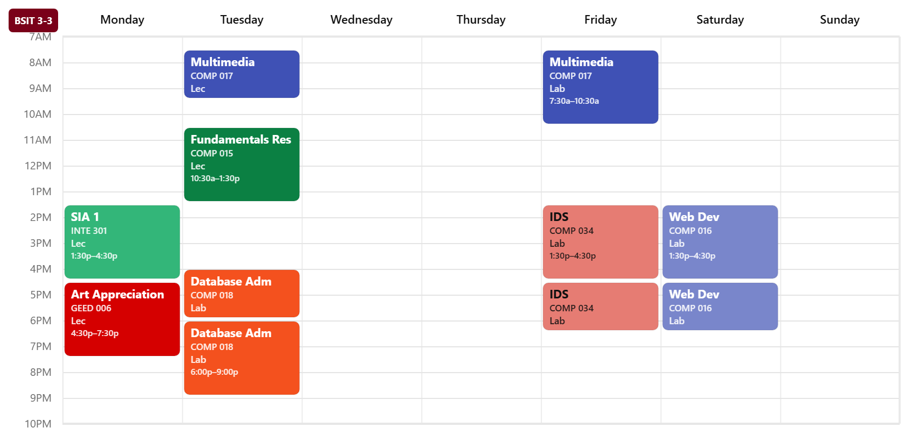
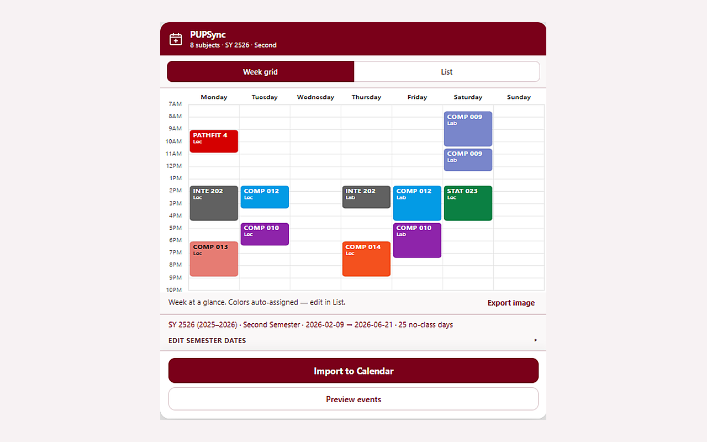
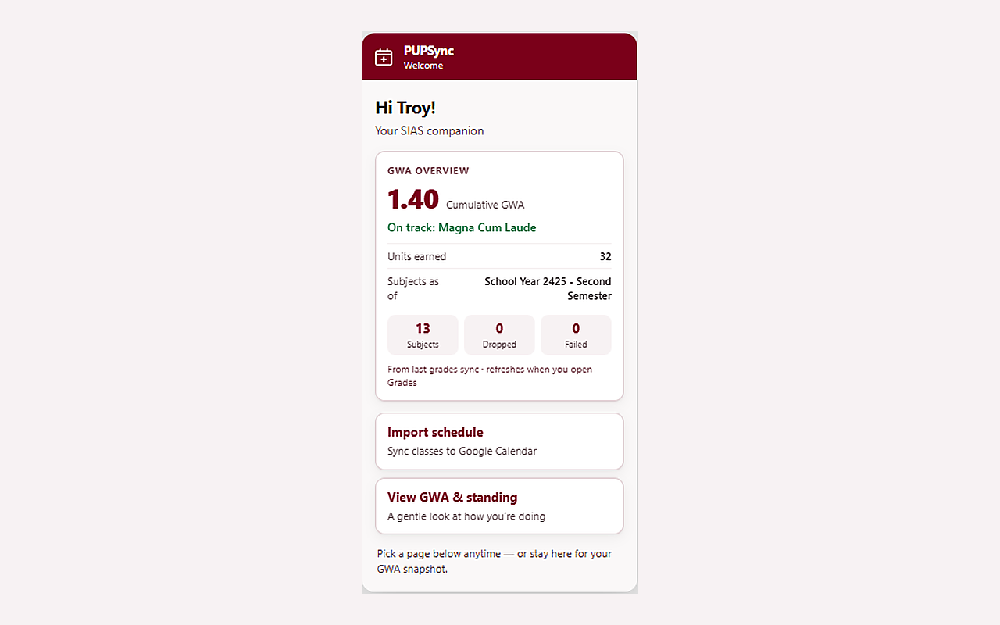

PUPSync
PUPSync is a free Chrome extension for Polytechnic University of the Philippines (PUP) students. Its purpose is to import your SIAS class schedule into Google Calendar and show GWA / Latin honors standing.
Unofficial student project. Not affiliated with PUP.

Purpose of PUPSync
The purpose of PUPSync is to help PUP students sync their official SIAS class schedule into Google Calendar and review GWA standing without building spreadsheets by hand.
PUPSync requests Google Calendar access only so it can create recurring class events on your primary calendar after you preview and confirm an import. Schedule and grades are read from SIAS pages already open in your browser; PUPSync does not run a server that stores your academic data.
Privacy details: PUPSync Privacy Policy.
How it works
Open SIAS, open PUPSync, import. No PUPSync server.
-
1
Open your SIAS schedule
Log into SIAS as usual. PUPSync reads the schedule page already open in your browser.

-
2
Preview, then import
Pick colors, preview the week, then send recurring class meetings to your primary Google Calendar.
-
3
Check GWA anytime
On the grades page, see overall GWA and indicative Latin honors standing without hunting spreadsheets.

What PUPSync does
- Schedule import - Parses your SIAS class meetings and creates recurring events on your primary Google Calendar when you choose Import.
- Colors and preview - Assign Google Calendar colors per subject and preview the week before importing.
- GWA and Latin standing - Reads grades already shown on SIAS and shows overall GWA with indicative Cum / Magna / Summa cutoffs.
- Share exports - Optional week or GWA image export for friends. Stays on your device unless you save or send the file.
Why we ask for data
PUPSync has no backend. Here is exactly what happens when you use it.
- SIAS pages on
*.pup.edu.ph - When you open the extension on schedule, grades, or home, it reads information already visible in your browser (classes, grades, displayed name) so it can show the popup UI. That data stays in your browser and Chrome local storage.
- Google Calendar (
calendar.events) - Only if you click Import. PUPSync requests permission to create calendar events on your primary Google Calendar. It does not use Google data for ads, and it does not need full calendar read access. You can revoke access in Google Account permissions.
- Local storage only
- Preferences (colors, date overrides, greeting name, temporary OAuth token) stay on your device. There is no PUPSync server that receives your schedule or grades.
Full details: Privacy Policy (same URL as on the Google OAuth consent screen).
FAQ
Is this an official PUP product?
No. PUPSync is an independent student project and is not affiliated with or endorsed by the Polytechnic University of the Philippines.
Do I need to log in to this website?
No. This homepage and privacy policy are public. You only sign in with Google inside Chrome when you import to Calendar.
Where can I install it?
From the Chrome Web Store when the listing is live, or load unpacked from GitHub.